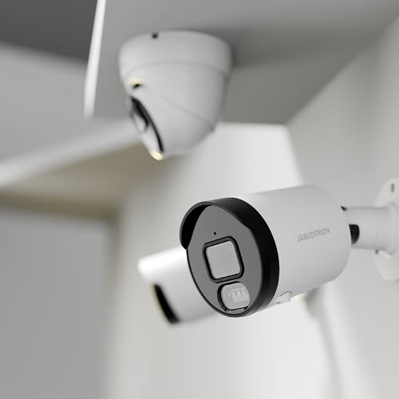

Kamerové systémy
Navrhneme a namontujeme kamerové systémy (CCTV) podle charakteru objektu — od domu po areál.

Kamerové systémy jsou součástí ochrany života, zdraví a majetku a mají i preventivní účinek. Používají se k monitorování objektů a pozemků — obchodů, muzeí, čerpacích stanic, parkovišť i rodinných domů — a k uchování záznamu. Efektivně doplňují elektronické zabezpečovací systémy.
Nejdůležitější součástí je kamera. Nabídka je široká, proto výběru věnujeme pozornost: vnitřní i venkovní prostředí, infračervený přísvit pro provoz za tmy. Obraz se přenáší kabelem, výjimečně bezdrátově. Záznam běží na digitálním zařízení — živě nebo později. Vzdálený náhled je možný přes internet.
Základem nabídky jsou kvalitní systémy značek Vivotek, Axis, Sony a dalších. Součástí zakázky je návrh pokrytí, montáž, zaškolení obsluhy a napojení na další slaboproud objektu.